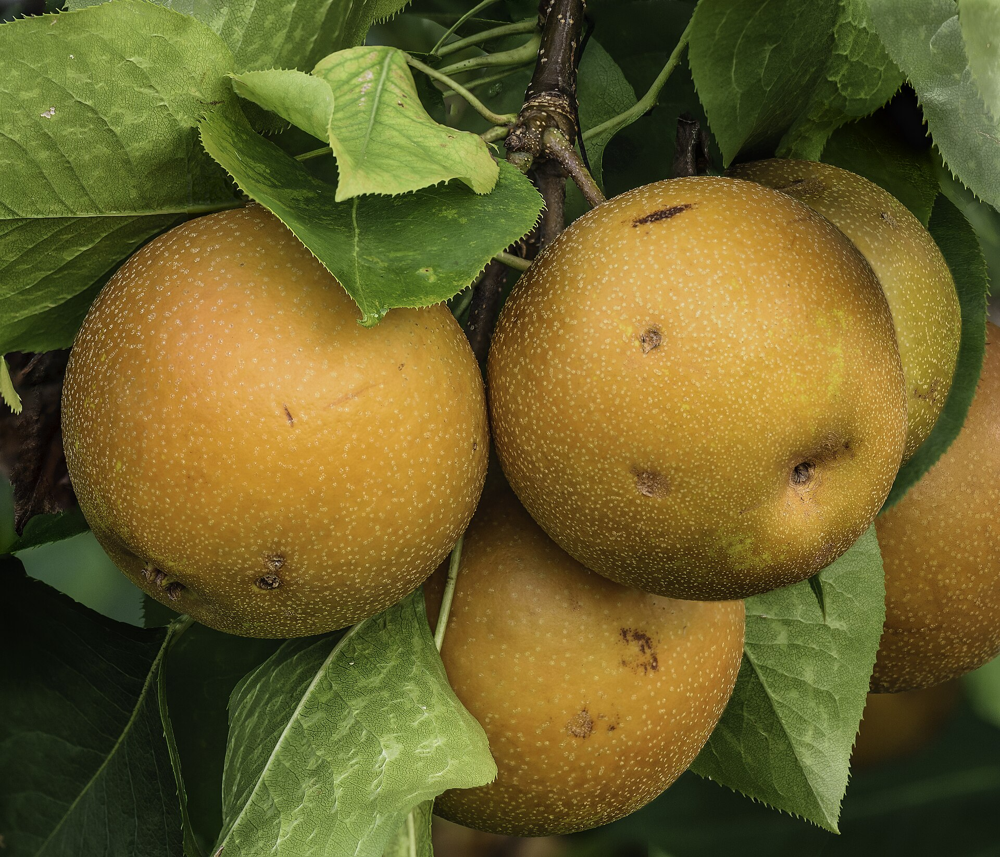

初夏のさわやかさ
まだ青みが残る頃の梨は、軽やかですっきりした甘さが楽しめます。
今が旬
About
鎌ヶ谷市では、豊かな自然と人の手入れが重なり、梨の栽培が長く続いています。 風の通り道が良く、日当たりと水はけにも恵まれたこの土地で育つ梨は、 みずみずしく、食べた瞬間に広がる自然な甘さが特長です。
ふっくらとした果肉と、ほどよい酸味が絶妙なバランスを生み、 その日の気候や熟成の違いを感じられることも梨の魅力のひとつです。
Season
まだ青みが残る頃の梨は、軽やかですっきりした甘さが楽しめます。
一番香りが強くなり、果肉がしっかりして、濃厚な甘みが際立ちます。
熟成を楽しみながら、デザートやサラダ、手作りスイーツにもぴったりです。
Experience
鎌ヶ谷市では、梨の収穫体験や直売所の品揃えの良さも人気です。 ふるさとの季節の変化を感じながら、梨とともに過ごすひとときは特別なものです。

Local Flavor
Varieties
爽やかな甘さとほどよい酸味が、夏の暑さにぴったりの一品です。
果肉がやわらかく、ジューシーな甘みと香りが広がる人気品種です。
濃厚な甘みと熟成の深みがあり、上品な味わいを楽しめます。
Taste
すっきりとしたタイプから、やや濃厚で果肉がしっかりしたタイプまで、 鎌ヶ谷市の梨は品種ごとに違った魅力を持っています。 甘さと香りのバランスを見比べながら、気分に合う一つを選ぶ楽しみもあります。
Ranking